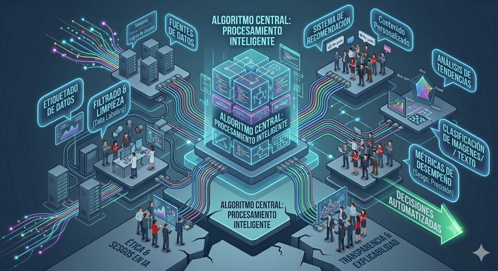
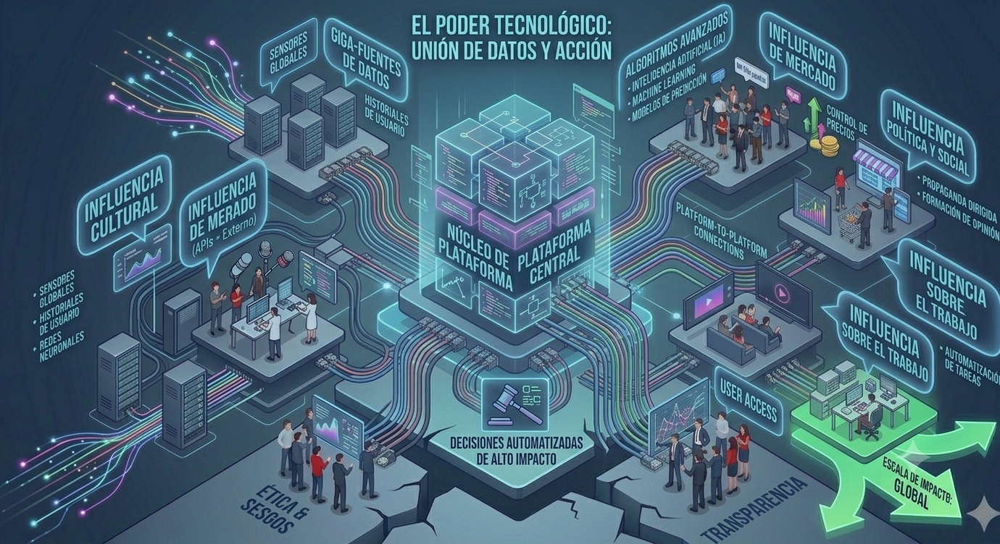

La investigadora y ensayista Asma Mhalla analiza cómo las grandes plataformas tecnológicas han adquirido un papel cada vez más influyente en la política, la economía y la sociedad.
Explorar sus ideas
politóloga y especialista en tecnología y geopolítica. Su trabajo se centra en cómo el poder digital, la inteligencia artificial y las grandes plataformas tecnológicas influyen en la sociedad y en la política global.
Asma Mhalla es una investigadora, ensayista y analista especializada en el impacto de las tecnologías digitales en la política y la sociedad. Sus estudios se centran en el creciente poder de las grandes plataformas tecnológicas y en la forma en que los algoritmos influyen en la circulación de información, la construcción de la opinión pública y la toma de decisiones colectivas.
A través de sus investigaciones, propone reflexionar sobre el papel que desempeñan las empresas tecnológicas en el mundo actual y cómo estas transforman las relaciones entre ciudadanos, gobiernos y sistemas de información.
En la actualidad, las plataformas digitales ya no son simples herramientas de comunicación. A través de algoritmos, datos e inteligencia artificial, participan activamente en la manera en que las personas se informan, interactúan y construyen sus opiniones.
Según Asma Mhalla, las tecnologías digitales han adquirido un papel cada vez más importante en la organización de la sociedad y la circulación de información.

Los algoritmos determinan gran parte del contenido que vemos en internet. A través de recomendaciones y sistemas automatizados, influyen en la forma en que las personas acceden a la información y construyen sus opiniones.
Las redes sociales y los servicios digitales se han convertido en espacios centrales para la comunicación, el entretenimiento y el acceso a las noticias. Su alcance les otorga una enorme capacidad de influencia.

Las grandes empresas tecnológicas poseen recursos, datos y capacidades que les permiten participar de manera significativa en procesos sociales, económicos y políticos a escala global.
Generan contenido e interactúan en internet.
Redes sociales y servicios digitales recopilan información y actividad.
Analizan datos y determinan qué contenido mostrar.
Las ideas de Asma Mhalla ayudan a comprender por qué las fake news encuentran un entorno favorable para difundirse en la era digital.